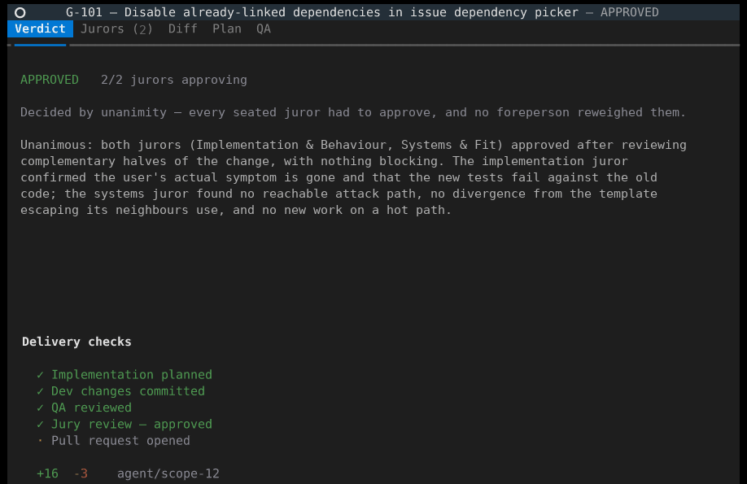
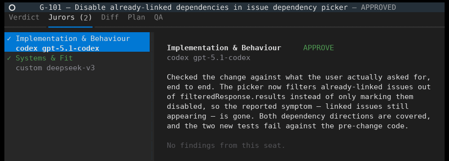
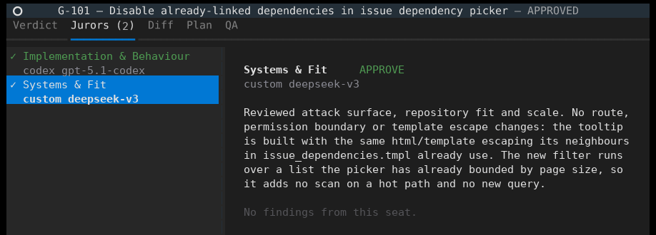
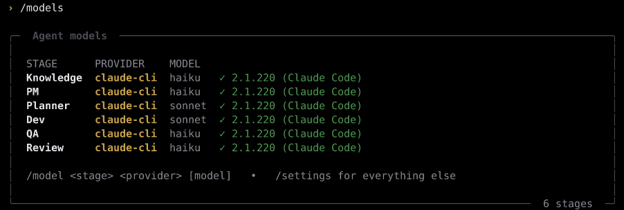
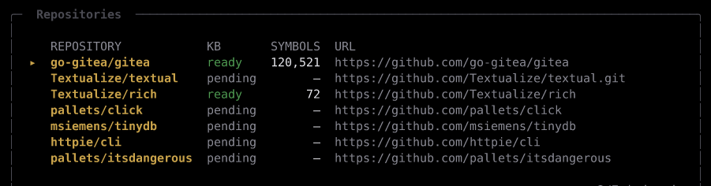
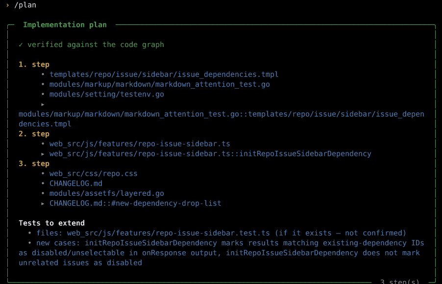
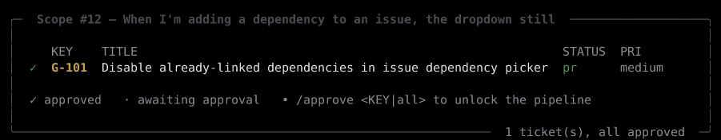
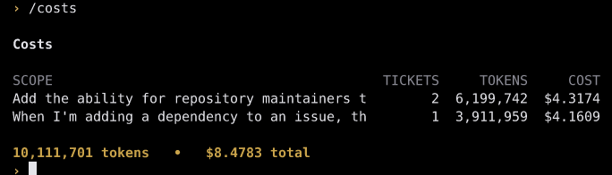

██████╗ ██████╗ ██████╗ ███████╗ ██╗██╗ ██╗██████╗ ██╗ ██╗ ██╔════╝██╔═══██╗██╔══██╗██╔════╝ ██║██║ ██║██╔══██╗╚██╗ ██╔╝ ██║ ██║ ██║██║ ██║█████╗ ██║██║ ██║██████╔╝ ╚████╔╝ ██║ ██║ ██║██║ ██║██╔══╝ ██ ██║██║ ██║██╔══██╗ ╚██╔╝ ╚██████╗╚██████╔╝██████╔╝███████╗╚█████╔╝╚██████╔╝██║ ██║ ██║ ╚═════╝ ╚═════╝ ╚═════╝ ╚══════╝ ╚════╝ ╚═════╝ ╚═╝ ╚═╝ ╚═╝
⟨ ⚖ ⟩ C O D E J U R Y
a jury of agents for your codebase
Your reviewer is a jury,
not a judge.
Coding agents ship slop because the model reviewing the diff is biased in the same direction as the model that wrote it. So the review stage here is two of them, on different providers. They read the same change from different briefs, they never see each other's opinion, and it ships only if both approve. Not more review — less correlated review.
And the second judge is nearly free. Review is the cheapest stage in the pipeline: in the delivery recorded below, the whole jury cost $0.10 of a $3.45 run. On free Groq and Gemini models it costs nothing at all.
git clone https://github.com/krishagarwal314/CodeJury cd codejury ./run.shpython 3.11+
no API key required
macOS · Linux · Windows
MIT licensed · Python 3.11+
01 Why two reviewers
A single judge is fast, confident, and — when it runs the same family as the writer — blind in the same places the author was blind. Same training data, same idea of what looks right, same willingness to accept a plausible diff that never wires the feature through. Ask it again and you get the first answer back, which is the problem: one opinion sampled twice is still one opinion.
The second judge is nearly free
Put the cost objection to bed first, because it is the reason people stop reading here. Two judges is two calls, but of the cheapest stage you have. A juror reads one case file once — the diff, the requirement, and the repo knowledge around it — and answers in a few hundred tokens of JSON. It never writes code, never iterates, never re-reads the repository. Dev reads whole source files across up to four rounds and generates the entire change. You're doubling the smallest line on the invoice.
If cost really is the binding constraint, the lever is free-tier providers, not one reviewer. Two judges on free Groq and Gemini models cost nothing.
The diff isn't rationed to save money, either. The budget is derived from what each seated juror's provider actually accepts in one request, so on Gemini, Anthropic or an agentic CLI the whole diff goes through. Only a genuinely tight endpoint (Groq's free tier caps a request at 22K characters) forces a cut, and then the cut lands on a line boundary and labels itself, so a juror never reads the tail as missing code.
The evidence that two beats one
That isn't just intuition. SE-Jury (Zhou et al., 2025) measured how well automatic judges agree with human experts about whether generated code is correct, and an ensemble beat every single judge they tested.
| Judge | CoNaLa | Card2Code | APR-Assess | Summary | Avg |
|---|---|---|---|---|---|
| the LLM alone, plain prompt | 45.6 | 70.4 | 43.5 | 33.9 | 48.4 |
| ICE-Score (best single judge) | 55.2 | 66.5 | 43.5 | 33.1 | 49.6 |
| SE-Jury (ensemble) | 63.5 | 80.3 | 76.2 | 37.3 | 64.3 |
Program repair is the row that matters, because fixing a bug in existing code is what a coding agent actually does: 76.2 against 43.5. On exactly the task the agent spends its day on, the ensemble tracks human judgement close to twice as well as the single judge does.
The verdict is a rule, not a model call
There is no foreperson. With two jurors there is nothing to arbitrate, and an arbiter is just one more model that can talk a correct finding out of the verdict.

A dissent is never outvoted by the other juror's approval, because they reviewed
different halves — that approval is silence about a subject it was never asked to
look at. And if one juror abstains (a timeout, a rate limit, unparseable output) the
verdict is INCONCLUSIVE, not approved. Half a review is not a pass. The
juror is retried once first, since on a two-seat jury a lost seat costs the whole
delivery.


The two seats
- Seats
- 2, on different providers
- up to 6 specialists (4 seated)
- Briefs
- Implementation takes the requirement, wiring, edge cases and tests. Systems takes security, fit with the repo's patterns, scope creep and scale. Each is told what the other owns.
- one concern each: correctness, reliability, security, architecture, performance, tests
- Decision
- unanimity, no foreperson
- a foreperson merges and decides
- Cost per round
- 2 calls
- N+1 calls
The default. Two calls of the cheapest stage you have.
Kept for when you want more perspectives. Each mode keeps its own roster, so trying the panel and coming back finds your pair as you left it.
pair · 2/2 seated · all must approve ✓ Implementation & Behaviour codex / gpt-5.1-codex ✓ Systems & Fit custom / deepseek-v3 space seat/unseat m model a add judge d remove shift+↑/↓ reorder R reset q close2 seated
a adds a seat with your own brief — house API conventions, a compliance checklist, whatever your team argues about in review. A judge pointed at a provider with no usable key is flagged as unable to run, because a juror that silently isn't there looks exactly like a juror that found nothing.
02 Six stages, any model on each
CodeJury isn't one agent with a reviewer bolted on. It's six stages, and you pick the provider and model for each one from the terminal. A skill pack lives inside one vendor's agent and runs one vendor's model everywhere; this runs across them.
| Stage | What it does | Wants |
|---|---|---|
| Knowledge | Builds and refreshes the repo's knowledge base. Once per repo, then incrementally. | cheap, high volume |
| PM | Clarify-loop against your plain-English request, then drafts tickets. Owns the requirement, never the code. | conversational, pushes back |
| Planner | Reads the repo through the code graph and decides how the change is made: ordered steps, blast radius, which tests to extend. Every symbol it names is checked against the graph and ripgrep. | good reasoning, cheap — it's read-only |
| Dev | Implements the plan on an agent/<key> branch. | your best coding model |
| QA | Runs the suite and reviews the result independently of Dev. | reliable at reading output |
| Review | The jury. | different family than Dev |

/models # who owns each stage, and is it installed here? /model dev anthropic claude-sonnet-5 # repoint one stage /model planner gemini gemini-3.5-flash-lite /settings # or drive it from the panel; `p` applies a # one-provider preset
You don't need an API key. The coding and planning stages run on the agents you already pay for — Claude Code, Codex, Cursor, Aider, Gemini CLI — driven headless through their own login, on your existing subscription. /doctor tells you which ones are usable on this machine and how to fix the ones that aren't.
If you'd rather use keys, any work: the native Anthropic API, or any OpenAI-compatible endpoint (OpenAI, Groq, Gemini, xAI, OpenRouter, Together, DeepSeek, local Ollama). The defaults target Groq's free tier, so the whole pipeline can run for nothing.
03 It looks changes up instead of hunting for them
A cold agent pays the localization tax on every task. Dropped into a repo it has never seen, it greps, opens files, guesses, backtracks, and re-derives the same architecture from scratch each time. On a large codebase that's expensive and it never stops.
CodeJury pays it once. Ingesting a repo builds a knowledge base that persists on disk and re-syncs as the repo moves:
- A code graph
- Definitions, call edges, imports and HTTP routes across 158 languages, giving
exact
file:linelookups and call-graph impact analysis. Deterministic, and free: no per-repo LLM or embedding spend. - Semantic search over the graph's nodes
- Embedded locally (fastembed ONNX + embedded Qdrant, no Docker, no key) and
fused with BM25 through weighted Reciprocal Rank Fusion. So “show how far
along a long-running job is” finds
progress.pydespite sharing no tokens with it: 8/10 against 5/10 top-5 recall versus keyword-only on vocabulary-mismatch queries. - Delivery memory
- After each scope ships, the KB records what it learned — files touched, symbols added, gotchas, wiring — and that ranks into future scoping.

Nothing in the pipeline is Python-shaped. Symbol extraction, import parsing, the edit-time syntax gate, what counts as a test file and which runner to use all live in one registry that dispatches on file type. That gitea index is 120,521 graph nodes and 15,991 embedded symbols, and “issue dependency search” returns the Go model while “dependency dropdown candidates” returns the TypeScript component, from the same query.
What the Planner does with all that is the point: it doesn't ask Dev to go find anything. Every file and symbol in the plan is a pin that was checked against the graph before Dev saw it.

Measured against plain Claude Code
Identical plain-English request to both, on the two largest repos benchmarked: Textualize/rich (~35.6k LOC) and Textualize/textual (~82.5k LOC).
| Repo | Task | CodeJury | Cold claude -p | Δ |
|---|---|---|---|---|
| rich | feature | $0.333 | $0.449 | −26% |
| rich | cross-cutting bug | $0.456 | $0.828 | −45% |
| textual | feature | $0.380 | $0.590 | −36% |
| textual | extreme cross-cutting bug | $1.705 | $6.830 | −75% |
| textual | medium bug | $1.697 | $2.146 | −21% |
| textual | greppable bug | $0.374 | $0.401 | −7% |
The saving scales with how hard the change is to find. On the extreme case the cold baseline spent $6.83 over 207 turns and 14.3M tokens chasing one cache-decorator bug. Repo size isn't the driver; localizability is — a cross-cutting bug can cost a cold agent 3.5× the tokens of a greppable one in the same repo.
It loses in places too. On a very cheap task (baseline ~$0.21) the fixed cost of the gates is more than a cold run spends at all, and on the hardest bug the cheap win shipped a narrower fix than the baseline did. Both are written up in the full report, along with the earlier untuned runs that led here. It's the most interesting thing in the repo; read it before the code.
04 Getting started
Python 3.11+ and git are the only hard requirements, plus one way to power the
agents: an already-logged-in coding CLI, or any LLM API key. Optional but recommended:
ripgrep, the codebase-memory-mcp binary, and gh
for real PRs.
run.sh creates the venv, installs everything, grabs the code-graph
binary if npm is around, copies .env.example → .env,
prints a preflight report and drops you into the shell. Prefer pip:
pip install -e ".[semantic,treesitter]" then codejury.
Did I set this up right?
Environment ✓ python 3.12.3 ✓ git git version 2.43.0 ✓ ripgrep ripgrep 15.2.0 Knowledge base ✓ code graph (codebase-memory-mcp) codebase-memory-mcp 0.9.0 ✓ semantic search (fastembed + qdrant) installed Coding CLIs detected ✓ claude-code 2.1.220 (Claude Code) ✓ codex codex-cli 0.145.0 ✗ cursor 'cursor-agent' not found on PATH • cursor: Install the Cursor CLI (cursor-agent), then run `cursor-agent login` — or set a Cursor API key on the Providers tab. ✓ Ready to run. 2 optional component(s) degraded — see above.ready
Every dependency is optional in a different way, and some degrade quality silently rather than crashing, so doctor reports all of them with a repair hint and exits non-zero when something genuinely blocks a run.
Your first delivery
/kb add https://github.com/pallets/click # index a repo add a --dry-run flag to the CLI runner # plain English; the PM agent scopes it /tickets # PM drafts engineering tickets /approve all # the human gate — nothing writes code before this /run # Planner → Dev → QA → jury → PR, streamed live /review # the verdict, every juror's findings, the diff

Demo mode is on by default, so the PR stage is a dry run. Turn it off (and
authenticate gh) only for a repo you own.
Commands worth knowing
| /doctor | What's installed, what's degraded, what blocks a run. |
|---|---|
| /kb add <url> | Index a repository, rendered live with the stage it's actually in. Ctrl-C detaches; the build keeps going. |
| /run | The pipeline as a stage timeline: per-stage model, elapsed time, cost, live tool-call count. |
| /review | The jury panel — the verdict and the rule that produced it, each juror's findings, the diff, the plan to read it against. |
| /jury /models | The roster, and who owns each stage. |
| /settings | Providers and keys, per-stage models, loop bounds, delivery safety, Jira. |
| /costs | Tokens and dollars per ticket, scope and agent, read from each backend's own meter. |
| /show <KEY> | One ticket in full. Criteria the PM assumed rather than heard are flagged — the last cheap place to catch a drifted requirement. |

Everything the shell does is also a subcommand, dispatching through the same registry, so the interactive and scripted paths can't drift.
codejury doctor --json codejury ingest https://github.com/pallets/click --wait codejury scope "add a --dry-run flag to the CLI runner" codejury approve all && codejury run codejury review TASK-101 --json
05 How it works
ingest repo → knowledge base (code graph + embeddings + views) → PM clarifies + drafts tickets → human approval (+ optional Jira) → Planner: ordered steps, verified file:line pins, blast radius → Dev implements on an agent/<key> branch → QA runs tests + reviews ┐ → Jury: 2 judges review in parallel, blind ├— revise loop ×N on failure → Both approve, or it goes back with the reason │ (panel mode: N + foreperson) → PR opens ┘
The pipeline runs on a worker thread and records everything to SQLite, which is the durable record a rejoined session reads back. It also publishes to an in-process event bus, so the terminal follows a run as it happens instead of polling a database for something happening in the thread next to it.
A few things it refuses to do
- No silent green
- QA sees the diff and the test output, because “no failures” and
“the suite never ran” look identical otherwise. A suite that times out
or is missing is stamped
NO TEST SIGNAL, and that reaches the board, the PR body and the knowledge write-back. - No unreviewed change looking clean
- An errored reviewer is
INCONCLUSIVE, never a pass. A Dev that fails stops the scope even if it committed something first, because a truncated edit set and a finished one look the same in a diff. - No requirement drift
- Every juror sees your verbatim request beside the PM's criteria. A jury judging only the criteria can't notice the criteria were wrong, since every juror is checking the same paraphrase.
- Degrades instead of breaking
- No graph binary → symbol map. No embeddings → TF-IDF. No ripgrep
→
git grep. No Jira → a no-op. Runs offline on a free-tier key.
Longer write-ups: architecture · knowledge base · configuration · benchmark · retrieval ablation
06 Colophon
Roughly 90% of the code here was written by CodeJury itself. I'd rather say that up front than have you work it out from the commit history, and honestly I don't understand the instinct to hide it — a tool that builds itself is the most useful thing you can know about it.
It wasn't vibe coded, though. Every change went through the same pipeline you see at the top of this page: a scope I had to agree to before anything was written, a plan pinned to symbols that were checked against the real code, a jury that could send it back and sometimes did, and me reading the diff before it landed. The agent wrote most of the lines. The decisions about what should exist, and what was allowed to ship, were mine.
Citation — SE-Jury (Zhou et al., 2025)
@article{zhou2025sejury,
title = {SE-Jury: An LLM-as-Ensemble-Judge Metric for Narrowing the Gap
with Human Evaluation in SE},
author = {Zhou, Xin and Kim, Kisub and Zhang, Ting and Weyssow, Martin and
Gomes, Lu{\'i}s F. and Yang, Guang and Liu, Kui and Xia, Xin and
Lo, David},
journal = {arXiv preprint arXiv:2505.20854},
year = {2025},
url = {https://arxiv.org/abs/2505.20854}
}